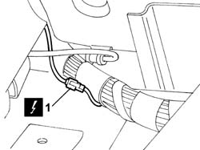
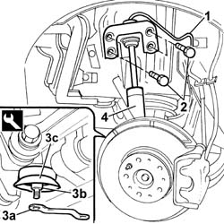

4440K30 LEFT OR RIGHT REAR INTELLIGENT SUSPENSION SHOCK ABSORBER (ONE) - R.R.
- Path
- Procedures > 44 SUSPENSION AND WHEELS > 4440 INTELLIGENT SUSPENSION > 4440K INTELLIGENT SUSPENSION REAR SHOCK ABSORBERS AND SPRINGS > 4440K30 LEFT OR RIGHT REAR INTELLIGENT SUSPENSION SHOCK ABSORBER (ONE) - R.R.
- Kind
- repair procedure (removal / refitting; the operation number is the code)
- Applies to
- all engines; all production periods
- Interactive page
- https://sloeber94.github.io/elrnDB-lThss/en/#/180160
Applies to: all engines; all production periods
 Removing
Removing
 Refitting
Refitting- Disconnect the negative battery terminal.
- Partly remove the load carrying compartment lining.
See in Op. 7040B10 LOAD CARRYING COMPARTMENT LINING - R.R.
See in Op. 7040B17 Luggage compartment/load platform side trim flap (one) - Replace
See in Op. 7040B13 Luggage compartment/load platform SIDE LINING - R.R.
- Remove the rubber plug in the bodyshell and release the wiring, as necessary, to gain access to the electrical connector.
1. Disconnect the electrical connection for the shock absorber.
 | Description | Connector |
|---|---|---|
1 | SCS right rear actuator | N098 |
| Description | Connector |
|---|---|---|
1 | SCS left rear actuator | N099 |

Applies to: all engines; all production periods
- Position the vehicle on a lift.
See in Op. 4450B11 Rear WHEEL (one) - R.R.
See in Op. 7055B43 REAR WHEEL ARCH LINER (one), left or right - R.R.
1. Release the electical wiring for the shock absorber from the fastening on the bodyshell.
- Remove the hydraulic support
2. Undo the bolts fixing the shock absorber to the bodyshell.
3. Using the tool (3a), undo the lower nut (3b) fixing the shock absorber to the track control arm and keep the washer (3c).
4. Remove the shock absorber from the housing.
 | Description | Code | Function |
|---|---|---|---|
3a | Spanner | 1.857.020.000 | Spanner for fixing rear lower shock absorber lower fastening |

Applies to: all engines; all production periods
Refitting
Removing- Fit the shock absorber in the special housing in the rear suspension tighten the bolts fixing it to the bodyshell.
- Tighten the nut fixing the shock absorber to the rear suspension to torque.
- Reposition the electrical wiring in the special opening in the bodyshell.
See in Op. 7055B43 REAR WHEEL ARCH LINER (one), left or right - R.R.
See in Op. 4450B11 Rear WHEEL (one) - R.R.
- Lower the vehicle and remove it from the lift and position it on a support.
- Tighten the nut fixing the shock absorber to the rear suspension to torque.
 | Value - daNm | Fastening | Component | Ø |
|---|---|---|---|---|
. | (steering knuckle side) 3.5 | Nut | REAR SHOCK ABSORBERS (S.M.) | M10 |
- Tighten the bolts fixing the shock absorber to the bodyshell to torque.
| Value - daNm | Fastening | Component | Ø |
|---|---|---|---|---|
. | (bodyshell side) 6 | Bolt | REAR SHOCK ABSORBERS (S.M.) | M10 x1,25 |
- Connect the electrical connection for the shock absorber.
| Description | Connector |
|---|---|---|
. | SCS right rear actuator | N098 |
| Description | Connector |
|---|---|---|
. | SCS left rear actuator | N099 |
See in Op. 7040B13 Luggage compartment/load platform SIDE LINING - R.R.
See in Op. 7040B17 Luggage compartment/load platform side trim flap (one) - Replace
See in Op. 7040B10 LOAD CARRYING COMPARTMENT LINING - R.R.
- Connect the negative battery terminal.
Topics linked from this page (5)
- 4450B11 Rear WHEEL (one) - R.R.
- 7040B10 LOAD CARRYING COMPARTMENT LINING - R.R.
- 7040B13 Luggage compartment/load platform SIDE LINING - R.R.
- 7040B17 Luggage compartment/load platform side trim flap (one) - Replace
- 7055B43 REAR WHEEL ARCH LINER (one), left or right - R.R.
Topics that link to this page (6)
- 3310B59 Rear brake DISC GUARD (one), left or right- R.R.
- 4420B34 Rear suspension TRACK CONTROL ARM, left or right - R.R.
- 4440K31 LEFT OR RIGHT REAR INTELLIGENT SUSPENSION SHOCK ABSORBER (ONE) - R.R.
- 4440K40 Rear suspension COIL SPRING - R.R.
- 4450D10 Rear wheel HUB, left or right - R.R. with wheel removed
- 4450D15 Rear wheel hub STUB AXLE, left or right - R.R. Including replacement of bush, if necessary